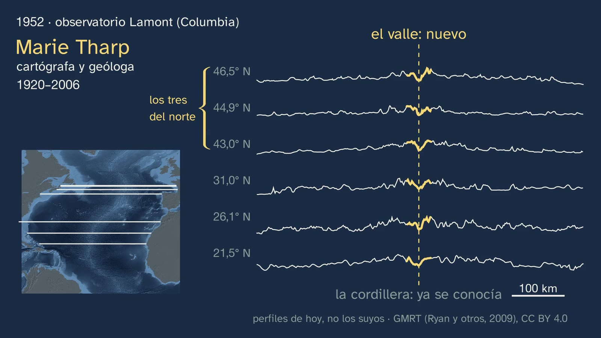
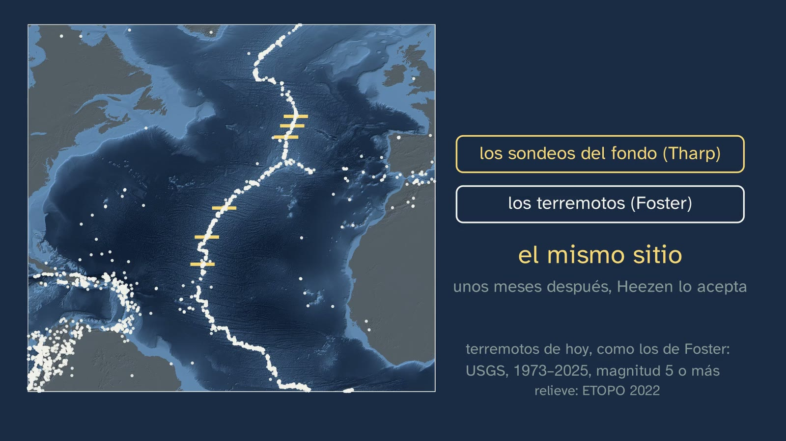
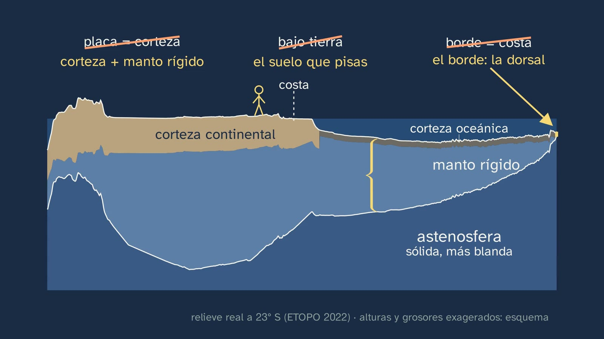

De la deriva continental a la tectónica de placas: una conjetura que tardó medio siglo
En pocas palabras
La clase abre el tema con una pregunta que casi nadie se hace: si Wegener acertó en 1912 en que los continentes se mueven, ¿por qué tardó medio siglo en aceptarse? Empieza con una cifra que él presentó en 1929 como «la primera prueba astronómica exacta»: Groenlandia se alejaría de Europa 36 metros cada año. La cifra se deja en el aire y se recoge al final.
La respuesta tiene dos mitades. Lo que le faltaba a Wegener: sus pruebas eran del pasado y algunas admitían otra explicación (los puentes de tierra hundidos), su motor era imposible (Jeffreys, 1929) y su medida, un error. Lo que llegó después: el fondo del mar. Marie Tharp encuentra en 1952 un valle en medio de la cordillera del Atlántico; los terremotos caen dentro; Heezen lo explica con una Tierra que se hincha y Hess, en 1960–1962, con un fondo que nace en las dorsales, se hunde en las fosas y lleva consigo al continente, en la misma pieza. De ahí sale qué es una placa y, sobre todo, una predicción que se puede medir, que comprobará el propio alumnado en la clase 2.
El cierre vuelve a Groenlandia: hoy el GPS da menos de 2 cm al año, y el error de Wegener cabía en el retraso de una persona al pulsar un cronómetro. Y desmonta el tópico de que «Wegener tenía razón y los demás eran unos cerrados»: quienes le rechazaron tenían argumentos; lo que faltaban eran datos del fondo del mar.
Objetivo. Al terminar, el alumnado sabrá qué pruebas dio Wegener, por qué no le creyeron, qué vio Marie Tharp en el fondo del Atlántico, qué propuso Harry Hess para explicarlo y qué predicción había que comprobar, y por qué ese recorrido enseña que la ciencia es colectiva y se corrige.
Lo que esta ficha añade:
- los matices que la voz no dice: cómo se calculó el encaje de la pizarra, el ambiente del mesosaurio, de dónde salen las cifras de Jeffreys, qué son los seis perfiles y el corte de la placa, de qué se ocupa la clase 2 y cómo se desmintió la medida de Groenlandia;
- los errores que conviene esperar;
- las soluciones de todo;
- una actividad de unos 15 minutos que no trae ningún libro: la medida de Groenlandia, con calculadora. El alumnado rehace la cuenta de Wegener, descubre que un segundo de reloj son 200 metros de suelo y calcula cuántos años habría que esperar para ver el movimiento real con aquel método;
- un mapa para recortar (
mapa-para-recortar.pdf, en los materiales), el que la voz anuncia en (4:05); - recursos abiertos para seguir.
Currículo
Real Decreto 243/2022, Biología, Geología y Ciencias Ambientales, texto consolidado del BOE (copia del laboratorio, comprobada para la ficha del tema el 16/11/2026). Los minutos son los del vídeo.
| Elemento | Qué dice el decreto | Dónde se trabaja |
|---|---|---|
| Saber básico, bloque D | «Los procesos geológicos internos, el relieve y su relación con la tectónica de placas. Tipos de bordes, relieves, actividad sísmica y volcánica y rocas resultantes en cada uno de ellos.» | La teoría que se construye en toda la clase; qué es una placa (14:28). Los bordes, uno a uno, en las clases 4 a 6 |
| Saber básico, bloque A | «Hipótesis, preguntas, problemas y conjeturas: planteamiento con perspectiva científica.» | Conjetura, hipótesis y teoría (2:38); la geopoesía de Hess (14:02); la predicción (15:35) |
| Saber básico, bloque A | «La evolución histórica del saber científico: la ciencia como labor colectiva, interdisciplinar y en continua construcción.» | Medio siglo, de 1912 a finales de los sesenta (16:16); la síntesis (18:39) |
| Saber básico, bloque A | «La labor científica y las personas dedicadas a la ciencia: contribución a las ciencias biológicas, geológicas y ambientales e importancia social. El papel de la mujer en la ciencia.» | Marie Tharp, con sus palabras (10:39) a (12:19) |
| Competencia específica 1 | «Interpretar y transmitir información y datos científicos, argumentando sobre estos con precisión y utilizando diferentes formatos…» | Los perfiles reales (11:07), los terremotos sobre el valle (11:53) y el corte de la placa (14:28) |
| Competencia específica 2 | «Localizar y utilizar fuentes fiables, identificando, seleccionando y organizando la información, evaluándola críticamente y contrastando su veracidad…» | Cada cita, con su obra y su página: Jeffreys (7:52), Wegener (9:50), Tharp (11:30), Hess (14:02) |
| Competencia específica 4 | «Buscar y utilizar estrategias en la resolución de problemas analizando críticamente las soluciones y respuestas halladas y reformulando el procedimiento si fuera necesario…» | El dilema de Jeffreys (7:37) y su solución con Hess (13:31); el error de Groenlandia (16:54) |
| Competencia específica 6 | «Analizar los elementos del registro geológico utilizando fundamentos científicos, para relacionarlos con los grandes eventos ocurridos a lo largo de la historia de la Tierra y con la magnitud temporal en que se desarrollaron.» | Los fósiles, el hielo y las sierras (4:18) a (6:42); Pangea (6:42) |
| Criterio 1.3 | «Argumentar sobre aspectos relacionados con los saberes de la materia, defendiendo una postura de forma razonada y con una actitud abierta, flexible, receptiva y respetuosa ante la opinión de los demás.» | La pregunta abierta (20:33) |
| Criterio 2.3 | «Argumentar sobre la contribución de la ciencia a la sociedad y la labor de las personas dedicadas a ella, destacando el papel de la mujer y entendiendo la investigación como una labor colectiva e interdisciplinar en constante evolución e influida por el contexto político y los recursos económicos.» | Tharp, que no podía embarcar (10:39); el mapa sin agua, por secreto militar (12:19); la guerra, que trajo la ecosonda (10:21) |
| Criterio 3.1 | «Plantear preguntas, realizar predicciones y formular hipótesis que puedan ser respondidas o contrastadas, utilizando métodos científicos y que intenten explicar fenómenos biológicos, geológicos o ambientales.» | ¿Cómo explicarías el reptil a los dos lados? (4:42); ¿cómo será de viejo el fondo? (15:35) |
| Criterio 4.2 | «Analizar críticamente la solución a un problema sobre fenómenos biológicos, geológicos o ambientales y modificar los procedimientos utilizados o las conclusiones obtenidas si dicha solución no fuese viable o ante nuevos datos aportados o recabados con posterioridad.» | Wegener acertó en el movimiento y falló en el mecanismo (13:31); la medida que no prueba nada (17:47); ¿unos cerrados? (18:07) |
| Criterio 6.1 | «Relacionar los grandes eventos de la historia terrestre con determinados elementos del registro geológico y con los sucesos que ocurren en la actualidad, utilizando los principios geológicos básicos y el razonamiento lógico.» | Los fósiles, las huellas del hielo y las rocas que siguen al otro lado (4:18) a (6:42) |
Lo que añade la actividad de esta ficha. El criterio 3.4, «Interpretar y analizar resultados obtenidos en un proyecto de investigación, utilizando, cuando sea necesario, herramientas matemáticas y tecnológicas, reconociendo su alcance y limitaciones y obteniendo conclusiones razonadas y fundamentadas o valorando la imposibilidad de hacerlo». La medida de Groenlandia es justo eso: un resultado que no se puede sostener con el método que lo dio.
Y una frase del decreto que es casi el título de la clase. Al describir la competencia 4: «el camino hacia los hallazgos y avances es rara vez directo y se ve con frecuencia obstaculizado por situaciones inesperadas y problemas de diferente naturaleza». El primer ejercicio, además, trabaja lo que la descripción de la competencia 3 llama «la diferencia entre una impresión u opinión y una evidencia».
Cómo está construida la clase
Capítulos del vídeo
Unos veintiún minutos, en catorce capítulos. Es una clase de teoría: Nil está en su mesa. Sale a cámara cuatro veces: al saludar (0:00), con el gancho (2:11), a mitad (10:14) y al despedirse (21:10).
| Parte | Qué pasa | Para qué |
|---|---|---|
| Lo que ya sabes (0:18) | ¿Cómo se llama la capa rígida de arriba? La litosfera y la astenosfera. | Traer lo que define una placa. |
| Las soluciones (0:50) | Las tres de la clase 5 del tema 1, con su enunciado. | Cerrar lo pendiente sin alargarlo. |
| Treinta y seis metros al año (2:11) | Wegener, 1929: Groenlandia se aleja 36 m al año. ¿Era cierta? Conjetura, hipótesis y teoría (2:38). | Un gancho con su contexto, que se recoge al final, y las tres palabras que ordenan la clase. |
| La idea de Wegener (3:09) | La charla de 1912 y el mapa. El encaje por el borde sumergido, calculado (3:32). El mapa para recortar (4:05). | Lo que propuso, y la primera prueba bien hecha. |
| Las pruebas (4:18) | El mesosaurio y el glosópteris, con sus hallazgos reales; la pausa (4:42); puentes hundidos, fijistas y movilistas, la isostasia (4:55); el hielo (5:39); el periódico roto (6:21); Pangea, con un modelo de placas (6:42). | Muchas ciencias apuntando a lo mismo, y por qué los fósiles solos no decidían. |
| Por qué no le creyeron (7:13) | ¿Qué fuerza? El rompehielos. Para y piensa (7:37). El dilema de Jeffreys (7:52) y sus cifras (8:23). Nueva York, 1926 (8:54). Du Toit y Holmes (9:21). «Todavía no ha llegado su Newton» (9:50). A mitad (10:14). | La primera mitad de la respuesta: sin motor posible y sin medida fiable. |
| El fondo del mar (10:21) | La ecosonda. Tharp y sus perfiles (10:39); los seis perfiles reales, alineados, y el valle (11:07); «No puede ser» (11:30); los terremotos dentro del valle (11:53); el mapa de 1957 (12:19); dos hipótesis con los mismos datos (12:34). | Los datos nuevos, y la idea de que unos mismos datos admiten varias hipótesis. |
| La hipótesis de Hess (12:52) | El fondo nace y se hunde, sin que la Tierra crezca (13:09). La objeción de Jeffreys desaparece (13:31). Geopoesía y Dietz (14:02). | La segunda mitad: un mecanismo posible. |
| Qué es una placa (14:28) | El corte real de la placa sudamericana. Tres errores, tachados y corregidos (15:13). | El concepto del tema, con sus errores típicos. |
| Una predicción (15:35) | ¿Cómo será de viejo el fondo? La pausa. Más viejo cuanto más lejos, e igual a los dos lados (15:53). La línea del tiempo, llena (16:16). | Lo que convierte la conjetura en teoría, y el puente a la clase 2. |
| Groenlandia, medida (16:27) | Treinta y seis metros frente a menos de dos centímetros. El reloj y las estrellas: un segundo, 200 metros (16:54). Una medida que no prueba nada (17:47). | Recoger el gancho, con lo que nadie cuenta: de dónde salía el error. |
| ¿Unos cerrados? (18:07) | La balanza: lo que tenía cada lado. | El error típico más extendido de esta historia. |
| Para practicar y seguir pensando (18:39) | Recapitular, tres ejercicios (19:54), la pregunta abierta (20:33) y la próxima clase (20:58). | Las soluciones abren la clase 2. |



Puentes con otras materias. Física y Química: la velocidad (el sonido en el agua, la ecosonda, la deriva en centímetros al año) y las fuerzas de marea. Historia del Mundo Contemporáneo: la Segunda Guerra Mundial y la Guerra Fría, que pagaron el sondeo de los fondos y guardaron en secreto sus curvas de nivel. Filosofía: cuándo una conjetura se vuelve teoría, y qué hace que una hipótesis se pueda poner a prueba. Matemáticas I: la trigonometría de la actividad (el radio de un paralelo es R·cos φ).
Lo que hay que traer
- De la ESO (Real Decreto 217/2022): la tectónica de placas sólo está en 4.º, y allí Biología y Geología es materia de opción. Parte del alumnado llega sin haberla estudiado nunca, aunque casi todo el mundo ha oído hablar de Pangea. La clase la construye desde el principio y sin dar por nuevo lo que ya suena.
- Del tema 1: la litosfera rígida sobre una astenosfera sólida y más blanda, que la clase recupera al principio (0:18); que el manto es sólido y fluye despacio; la isostasia, con la balsa de la clase 5 («Dos maneras de cortar la Tierra»), y las dos cortezas, la continental, más ligera, y la oceánica, más densa.
- De Física y Química: velocidad = distancia / tiempo.
- Para la actividad: calculadora con coseno, y la idea de que la Tierra da una vuelta en 24 horas.
Plan de una sesión de 50 minutos
Pensado para usar el vídeo por partes y hacer la actividad antes de ver cómo se desmintió la medida de Groenlandia, para que el alumnado encuentre el error por su cuenta.
| Minutos | Qué se hace |
|---|---|
| 0–4 | Sin vídeo, con la hoja: «Antes de ver el vídeo». Cada cual escribe cómo sabría que un continente se mueve y qué cree que es una teoría. |
| 4–14 | Vídeo de 2:11 a 10:21 (si las soluciones de la clase anterior ya se corrigieron). Se respetan las dos pausas: el reptil (4:42) y el «para y piensa» (7:37). |
| 14–21 | Vídeo de 10:21 a 16:27. En la pausa de 15:35, cada cual dibuja en la hoja cómo cree que cambia la edad del fondo. |
| 21–36 | La actividad, en parejas: la medida de Groenlandia (véase más abajo). |
| 36–41 | Vídeo de 16:27 a 18:39: cada pareja comprueba su cuenta con la de la pizarra. |
| 41–50 | La pregunta abierta (20:33), en parejas: el mejor argumento de cada lado, y después en común. Los tres ejercicios (19:54), para casa. |
Si hay poco tiempo, el vídeo entero en clase, con sus paradas, y la actividad para casa. Si sólo hay un rato, las partes que mejor funcionan sueltas son «El fondo del mar» ((10:21) a (12:52)) y «Groenlandia, medida» ((16:27) a (18:07)).
Notas para el profesorado
Conjetura, hipótesis y teoría (2:38). La clase usa tres palabras con un sentido preciso: una conjetura puede ser cierta pero aún no se puede poner a prueba; una hipótesis se arriesga, predice algo medible; una teoría ha pasado esas pruebas. Es un uso didáctico, no una norma universal: en la historia de la ciencia «hipótesis» y «teoría» se usan con más holgura. Lo que importa es el criterio: ¿se puede poner a prueba?
El encaje (3:32). Wegener no encajaba las costas, sino la línea de 200 m de profundidad, el borde de la plataforma (Wegener, 1929, p. 185). La pizarra calcula el mejor encaje posible de cada línea, girando Sudamérica sobre la esfera hasta que su línea queda lo más pegada posible a la de África, como hicieron Bullard, Everett y Smith en 1965 con ordenador (programa encaje.py, con ETOPO 2022). Resultado, en el tramo que mira al Atlántico Sur:
- por la costa: 729 000 km² de huecos y solapes, con una separación media de 131 km;
- por el borde a 200 m: 346 000 km², con 61 km.
De ahí «menos de la mitad». Bullard y otros encontraron el mejor encaje algo más hondo, en la línea de 500 brazas (unos 900 m), con errores de 30 a 90 km: la voz lo dice («algo más hondo»). La Patagonia y las Malvinas se dejan fuera, como en los encajes clásicos, porque ese borde se estiró al abrirse el océano. Jeffreys (1929, p. 322), que sólo miraba las costas, veía un desajuste de unos 15°.
El mapa para recortar (4:05). Está en los materiales: cuatro páginas A4, Sudamérica y África a 1:25 millones, con la costa y la línea de 200 m. Se recorta una copia por cada línea. Cada continente va en su propia proyección equivalente centrada cerca de su costa atlántica, así que el borde que se junta tiene casi su forma real; aun así, girar papel en una mesa no es girar sobre una esfera, y el encaje de papel es aproximado. El calculado está en la pizarra.
El mesosaurio (4:18). La voz dice «de aguas interiores, que no salía a mar abierto». La versión clásica lo hace de agua dulce, y hoy se discute: los yacimientos de Uruguay y Brasil apuntan a un mar interior salado, quizá muy salado (Piñeiro y otros, 2012). Para el argumento da igual: no podía cruzar un océano. Sus hallazgos están en el sur de África y en el este de Sudamérica (Brasil, Uruguay y Paraguay): la pizarra pone los reales, 17 sitios de la Paleobiology Database (CC0). El mapa de los cuatro fósiles que traen muchos libros no es de Wegener: el Lystrosaurus de la Antártida apareció en 1969–1970.
Fijistas y movilistas (4:55). Son nombres de hoy para ordenar el debate. La isostasia era el mejor argumento de Wegener contra los puentes: un puente de corteza continental, más ligera, no puede hundirse en un fondo más denso. Du Toit, su defensor, reconocía que los puentes también explicaban los fósiles, «aunque con menos elegancia» (en Wegener, 1929, p. V). Por eso la clase insiste: un hecho que se explica de dos maneras no decide entre ellas.
El hielo y el polo (5:39) y (6:42). Hace unos 300 millones de años, a finales del Carbonífero y principios del Pérmico, hubo casquetes de hielo en todos los continentes del sur y en la India (Wegener, 1929, p. 135; Rosa e Isbell, 2021). La pizarra marca las huellas en localidades clásicas, comprobadas una a una, de Sudamérica, África, Madagascar, la India, Arabia (Omán), Australia y la Antártida. En el globo, el polo sur de entonces va rotulado «según el modelo, aproximado»: lo da el modelo de placas, que tiene marco paleomagnético.
El periódico roto (6:21). La comparación es de Wegener (1929, p. 79), y la prueba la veía «difícil de tumbar». Las sierras de la Ventana (sur de la provincia de Buenos Aires) y del Cabo (Sudáfrica) forman parte de la misma cordillera antigua, con las Malvinas en medio (Stanca y otros).
Pangea (6:42). La animación usa el modelo de placas de Merdith y otros (2021, CC BY 4.0), con los hallazgos de los fósiles viajando con su placa. Se formó hace unos 300 millones de años y empezó a romperse hace unos 200 (USGS). No fue el primer supercontinente: antes hubo otros, como Rodinia y Columbia (Mitchell y otros, 2021).
El motor de Wegener y el rompehielos (7:13). Wegener propuso sobre todo dos fuerzas: la «fuga de los polos», que sale del giro de la Tierra, y el roce de las mareas; en 1929 también citó la convección (p. 184). La comparación del barco que rompe el hielo es del profe, no de Wegener: él comparaba los continentes con icebergs que flotan (p. 38). Lo que sí está en las fuentes es que, en su modelo, el continente tenía que abrirse paso por el fondo: «navegar por el sima» (Dietz, 1961, p. 855) o «arar la corteza oceánica» (Hess, 1962, p. 599).
Jeffreys (7:52) y (8:23). Geofísico británico, el mismo que dedujo en 1926 que el núcleo de la Tierra es líquido (tema 1, clase 4). El dilema está en The Earth (2.ª ed., 1929, p. 322): si el fondo es más duro, el continente no pasa; si es más blando, avanza «sin romperse» y no levanta cordilleras. La cifra: para mover América hacia el oeste en unos treinta millones de años con el roce de las mareas haría falta una fuerza 10¹⁰ veces mayor, que pararía el giro de la Tierra en cosa de un año (p. 322). Con sus propios números sale 3·10⁹; 10¹⁰ es su redondeo. La frase de que la deriva estaba «descartada» es de la p. 305 y sale de otro argumento, la resistencia de la corteza. Por eso la voz dice que lo que había probado era menos: que ninguna fuerza conocida bastaba.
Nueva York, 1926 (8:54). El simposio de la Asociación Americana de Geólogos del Petróleo, el 15 de noviembre de 1926; las ponencias se publicaron en 1928. La frase de «olvidar lo aprendido en setenta años» la recogió R. T. Chamberlin citando a un colega (Du Toit, 1937, p. 31); otros autores se la atribuyen al propio Chamberlin. Por eso la pantalla dice «citando a un colega».
Holmes (9:21). Presentó su idea en una charla de enero de 1928 ante la Sociedad Geológica de Glasgow, publicada en 1931: corrientes de convección en el sustrato que podrían separar los continentes y crear un océano nuevo entre ellos (p. 579), y él mismo la llama hipótesis de trabajo (p. 600). El esquema de la pizarra está dibujado de nuevo, no copiado.
La ecosonda (10:21). Un pulso de sonido baja, rebota y vuelve; con la velocidad del sonido en el agua, unos 1500 m/s, el tiempo de ida y vuelta da la profundidad. El fondo que recorre el barco es un perfil real (GMRT), y los segundos del cronómetro están calculados con esa velocidad.
Marie Tharp (10:39) a (11:30). Trabajaba en el Lamont Hall del observatorio Lamont, de la Universidad de Columbia, en Palisades, a las afueras de Nueva York. En 1952 completó seis perfiles del Atlántico Norte con sondeos de otros: durante unos quince años no la dejaron embarcar en los barcos del laboratorio (Tharp, historia oral del AIP). Las montañas no coincidían, pero el valle sí, «sobre todo en los tres del norte». Dos matices que la voz respeta: Tharp no descubrió la cordillera, que se conocía desde el siglo XIX, sino el valle que la recorre; y «cosas de chicas» traduce el «girl talk» con el que, según ella, Heezen despachó su interpretación (Tharp, 1999).
Los seis perfiles de la pizarra (11:07). No son los de Tharp: son de hoy, de GMRT (la síntesis de sondeos del Lamont, CC BY 4.0), y por eso la pizarra los rotula así. Están a 21,5°, 26,1°, 31,0°, 43,0°, 44,9° y 46,5° N, elegidas entre quince latitudes probadas de 21,5 a 52° N: en todas hay muesca, de 600 a 2000 m, y éstas la tienen de más de 1200 m. Se dejan fuera las Azores (37–40° N), donde la dorsal se ensancha en una meseta. Cada perfil se alinea por el eje que marcan los terremotos (la mediana de su longitud a esa latitud), y el valle es el punto más hondo a menos de 30 km de ese eje (programa fondo.py).
Los terremotos (11:53). Foster marcaba a mano los epicentros de los años cincuenta. Los de la pizarra son de hoy, como los suyos: los 2549 de magnitud 5 o más del catálogo del USGS entre 1973 y 2025 en el Atlántico Norte, localizados por la propia red del USGS (dominio público). Heezen no lo aceptó al ver los mapas superpuestos: tardó unos meses más, hasta mediados de 1953, y le convenció también que el valle siguiera hasta el Rift de África oriental (Tharp, 1999).
El mapa de 1957 (12:19). Fue el primer mapa publicado de Heezen y Tharp, no el primer mapa del fondo: había cartas batimétricas antes. Se dibujó como un paisaje sin agua porque las curvas de nivel del fondo eran secreto militar (Tharp, 1999; Biblioteca del Congreso, 2025). Es de dominio público en EE. UU. (no se renovó su registro), y la pizarra enseña un recorte.
La Tierra que se hincha (12:34). Fue una hipótesis seria: Heezen la propuso con cautela hacia 1959–1960, y Hess la cita (1962, p. 610). Hoy no se sostiene; por qué, lo cuenta la clase 2, que es donde lo pide el criterio 2.2 (contrastar la veracidad de la información).
Hess y Dietz (12:52) a (14:02). Hess mandaba el Cape Johnson en la guerra y dejaba la ecosonda midiendo en sus travesías. Escribió la idea en 1960, en un informe que circuló como preprint, y la publicó en 1962 («History of Ocean Basins»). Calculó 1 cm al año a cada lado con la separación de Sudamérica y África (p. 608). La cita de la geopoesía empieza «Como Umbgrove, …» (p. 599): por eso lleva corchetes. Dietz publicó en Nature en junio de 1961 y acuñó el nombre; en 1968 se reconoció la prioridad de Hess por aquel preprint (Nature 220, 535). Para Hess, al continente lo llevaba la convección del manto; qué mueve de verdad las placas es la clase 3.
El corte de la placa (14:28). Es un corte real a 23° S, de la fosa frente a Chile (unos 7400 m) a la dorsal atlántica, con el relieve de ETOPO 2022 exagerado en vertical. El eje de la dorsal sale de los 60 terremotos cercanos. Los grosores son de esquema: unos 100 km de media; menos junto a la dorsal, donde nace la placa, y más bajo las partes más antiguas de los continentes. La placa oceánica engorda al alejarse de la dorsal (Lithgow-Bertelloni y Richards, 1998) y bajo los escudos antiguos la litosfera pasa de 200 km (Artemieva y Mooney, 2001). La voz dice «unos cien kilómetros de media»: es el orden de magnitud de Isacks, Oliver y Sykes (1968).
La predicción (15:35) a (16:16). Hess ya lo apuntaba: en la cresta sólo debía haber sedimentos recientes (1962, p. 609). La forma de leer la cuenta, las bandas magnéticas, la propusieron Vine y Matthews en 1963 (y Morley, cuyo artículo fue rechazado); la comprobaron Pitman y Heirtzler y Vine en 1966, y en 1968 Isacks, Oliver y Sykes hablaban ya de la «nueva tectónica». La pizarra colorea las edades como esquema; los datos reales los maneja el alumnado en la clase 2.
Groenlandia (16:27) a (17:47). Las cifras:
- Wegener (1929, p. 29): 0,9 segundos de tiempo en cinco años, unos 36 m al año, entre la medida de 1922 (Jensen) y la de 1927 (Sabel-Jørgensen), en Qôrnoq, a 64,5° N. Él mismo escribe que la de 1927 se hizo con un micrómetro impersonal, que quita el error personal, y que suponer que el de Jensen fue de 0,9 s era «muy improbable».
- A esa latitud, un segundo de reloj son unos 200 m de suelo (véase la actividad).
- Salomon-Calvi (1931, pp. 6–8) lo vio enseguida: sólo la medida de 1927 quitaba el error personal, y un error personal de 0,9 s «está dentro de lo posible».
- En 1936 se repitió la medida en el mismo pilar y salió prácticamente igual que en 1927 (Nørlund, 1937; Polar Record, 1939). Una crónica de Nature (1937) habla de dos épocas «separadas siete años»: la pantalla sigue a Nørlund.
- Hoy: 17,5 mm al año en Kangerlussuaq (oeste) y 15,4 en el nordeste, con GPS; 18,1 y 15,9 con el modelo MORVEL. De ahí «menos de dos centímetros» y «unas dos mil veces».
Lo que nadie cuenta, y encaja con la reflexión de (17:47): Wegener daba un error medio nueve veces menor que la señal. Pero era el error de repetir la medida. El que importaba era el retraso de cada observador, que no baja por mucho que se repita. Es la diferencia entre error aleatorio y error sistemático, y vale para cualquier medida de laboratorio.
¿Unos cerrados? (18:07). La balanza no reparte culpas: a favor del movimiento había pruebas de muchas ciencias; en contra, un motor imposible, unos fósiles con otra explicación y una medida errónea. La frase que conviene que quede es la de la voz: quienes le rechazaron tenían argumentos, y lo que faltaba eran datos del fondo del mar.
Errores típicos y cómo se tratan
Los cuatro primeros están documentados en estudios con muestras grandes: King (2010), 51 libros de texto; Libarkin y otros (2005), 265 cuestionarios y 105 entrevistas; Marques y Thompson (1997), 270 alumnos de 16 y 17 años; Mills y otros (2017), 95 alumnos. Los demás los prevé la ficha del tema.
- «Las placas flotan sobre magma; el manto es líquido.» Es el error más repetido incluso en los libros (el 6,6 % de los que King encontró). (14:28): «Las placas no flotan sobre magma», con el magma tachado en la pizarra.
- «Una placa es la corteza.» (15:13): corteza y manto rígido.
- «Las placas están bajo tierra», o apiladas en capas. Lo creía el 40 % de los alumnos de Mills. (15:13): la parte de arriba de tu placa es el suelo que pisas.
- «Los bordes de las placas son las costas.» El 21 % de los alumnos de Marques y Thompson. (15:13): en el Atlántico, el borde está en medio del océano.
- «Pangea fue el primer supercontinente», o existía cuando se formó la Tierra (Libarkin). (6:42): antes hubo otros.
- «Wegener tenía razón y los demás eran unos cerrados.» (18:07). Ayuda preguntar qué habrían dicho ellos de su motor.
- «Jeffreys demostró que la deriva era imposible.» (8:23): demostró que ninguna fuerza conocida bastaba.
- «El continente va encima de la placa, como un barco.» (14:28): es parte de ella.
- «Una teoría es una idea sin demostrar.» Es el uso de la calle. (2:38): en ciencia, una teoría es lo que ha pasado las pruebas.
- «Marie Tharp descubrió la dorsal.» (11:07): la cordillera ya se conocía; ella vio el valle.
Preguntas y soluciones
Dentro del vídeo
- En la clase anterior partimos la Tierra en capas de dos maneras. Una, según sean rígidas o más blandas. La de arriba es rígida. ¿Te acuerdas de su nombre? (0:18). La litosfera: la corteza y la parte de arriba del manto, unos 100 km.
- Los fósiles de un reptil que no podía cruzar un océano aparecen a los dos lados del Atlántico. ¿Se te ocurre alguna explicación? (4:42); la pausa, con contador. Dos explicaciones posibles: los continentes estuvieron juntos, o hubo un puente de tierra. Lo que saldrá: «nadando», «lo llevó una corriente». Criterio: no importa acertar; importa ver que el hecho solo no decide entre las dos.
- El fondo del océano también es roca. ¿Puede un continente abrirse paso a través de él? (7:37); la pausa, con contador. No, si se mira como Jeffreys: si el fondo es más duro, el continente se para; si es más blando, avanza sin romperse y no levanta cordilleras. Lo que saldrá: «sí, como un barco».
- Si Hess tiene razón, ¿cómo será de viejo el fondo del mar a medida que te alejas de la dorsal? (15:35); la pausa, con contador. Más viejo cuanto más lejos, e igual a los dos lados. Lo que saldrá: «todo igual de viejo» o «más viejo en el centro».
Para practicar (las soluciones abren la clase 2)
- Explica cuál de las pruebas de Wegener era sólo una impresión y cuál era una evidencia, y por qué. El parecido de las costas a ojo es una impresión: algo que parece, que puede ser casualidad y que no se mide (Jeffreys veía un desajuste de 15°). Son evidencias las que se pueden comprobar y medir de forma independiente: el encaje del borde sumergido, con su error en kilómetros; las rocas y sierras que siguen al otro lado; los fósiles y las huellas del hielo en su sitio. Criterio: que distinga «parece» de «se comprueba», y que diga que una evidencia también puede admitir otra explicación (los fósiles). Se acepta otra elección si está bien razonada.
- Heezen y Hess tenían delante el mismo valle. Di cómo lo interpretaba cada uno. Y si Hess tiene razón, di dónde tiene que desaparecer el fondo del océano. Heezen: la Tierra se hinchaba y el fondo se abría como la piel de un globo. Hess: el fondo nuevo nace en la dorsal y se aparta a los dos lados, sin que la Tierra crezca. Por eso tiene que desaparecer en otro sitio: en las fosas, como la de Chile, donde se hunde y vuelve al manto. Lo que saldrá: que el fondo «se acumula» o «se amontona en las costas».
- Calcula cuánto se alejaría Groenlandia en cien años con la cifra de Wegener, y cuánto con la de hoy, 1,8 cm al año. 36 m × 100 = 3600 m = 3,6 km. 1,8 cm × 100 = 180 cm = 1,8 m. Dos mil veces menos. Criterio: las unidades: el error típico es mezclar metros y centímetros.
La pregunta abierta (20:33). En 1926, a favor de Wegener había muchas pistas, de ciencias distintas, que apuntaban a lo mismo. En contra, nadie conocía una fuerza capaz de mover un continente. Con lo que se sabía entonces, ¿le habrías creído tú? No tiene una respuesta de libro, y Nil no da la suya. Pistas para orientarla sin cerrarla: ¿es lo mismo creer una idea que tomarla como hipótesis de trabajo, como hizo Holmes? ¿Qué pesa más, muchas pistas que coinciden o un mecanismo que falta? ¿Qué te habría hecho falta para convencerte? Criterio 1.3: que defienda una postura con argumentos de los dos lados y que escuche los del otro.
Una actividad para el aula
La medida de Groenlandia, con calculadora. Unos 15 minutos, en parejas, con la hoja del alumnado y antes de ver la parte «Groenlandia, medida». No hace falta material, salvo calculadora con coseno.
La idea: en 1929 la longitud (dónde está un sitio de este a oeste) se medía cronometrando el paso de las estrellas. El alumnado calcula cuánto suelo corresponde a un segundo de reloj, rehace la cifra de Wegener y descubre qué precisión haría falta para ver el movimiento real.
Los datos: radio de la Tierra, R = 6371 km; Qôrnoq, a 64,5° N; la longitud se mide en tiempo, y 24 horas son una vuelta entera (véase la nota); diferencia entre las dos medidas, 0,9 s en cinco años; velocidad de hoy, 1,8 cm al año.
Las soluciones:
| Paso | Cuenta | Resultado |
|---|---|---|
| 1. Radio del paralelo de Qôrnoq | r = R · cos 64,5° = 6371 · 0,4305 | 2743 km |
| 2. Vuelta entera de ese paralelo | 2 · π · r | 17 233 km |
| 3. Suelo que pasa en un segundo | 17 233 000 m / 86 400 s | unos 200 m |
| 4. La cifra de Wegener | 0,9 s · 200 m/s = 180 m, en 5 años | 36 m al año |
| 5. Años para ver 0,9 s de verdad | 180 m / 0,018 m al año | unos 10 000 años |
| 6. Años para ver una décima de segundo | 20 m / 0,018 m al año | unos 1100 años |
| 7. Precisión para ver 5 años de movimiento real | 5 · 1,8 cm = 9 cm; 0,09 m / 200 m/s | 0,45 milésimas de segundo |
La conclusión que tiene que salir: con un cronómetro y las estrellas, el movimiento real de Groenlandia era invisible en una vida humana. La cifra de Wegener no medía el continente: medía la diferencia entre dos observadores. Hoy las antenas GPS aprecian una fracción de milímetro al año.
Nota para quien quiera afinar. Las «nueve décimas de segundo» de Wegener son una diferencia de longitud expresada en tiempo, la forma habitual en astronomía: 24 horas son 360°, así que un segundo son 15 segundos de arco, exactos. A 64,5° N, 15″ de arco son 199,5 m de suelo, lo mismo que sale en el paso 3. Si alguien objeta que la Tierra da la vuelta respecto a las estrellas en 23 h 56 min, la respuesta es ésa: aquí el segundo no mide un rato, sino un ángulo. La tabla redondea a 200 m.
Evaluación. Para el criterio 3.4: que cada pareja explique en dos líneas por qué la medida de 1929 «no prueba nada», aunque Groenlandia sí se mueva, y qué habría hecho falta para que probara algo (el mismo observador y el mismo método, o un método sin retraso humano, y muchos más años). Si sale la idea de que repetir una medida no quita un error que se repite igual cada vez, es el error sistemático: merece la pena nombrarlo.
Y el mapa para recortar, en casa o en el aula si sobra tiempo: dos copias del PDF, una recortada por la costa y otra por la línea azul. Cada pareja junta las piezas como mejor encajen y mide con una regla el hueco más ancho de cada encaje; con la escala, 1 mm del papel son 25 km. Por el borde sumergido tiene que salir mejor, como en la pizarra.
Recursos abiertos
Para seguir trabajando lo de la clase, todos gratuitos. Enlaces comprobados el 16/11/2026.
| Recurso | Qué ofrece | Cómo usarlo en clase |
|---|---|---|
| GeoMapApp, del Lamont | Aplicación gratuita con el relieve del fondo (GMRT), la misma base de la pizarra. En inglés | Trazar un perfil del Atlántico de lado a lado, como Tharp, y buscar el valle |
| Buscador de terremotos del USGS | El catálogo mundial, descargable. Dominio público | Pintar los terremotos de un mes y ver que dibujan las dorsales |
| Marie Tharp, «Connect the Dots» (Columbia) | Su relato, en primera persona. En inglés | Leer el pasaje de los seis perfiles y del «girl talk» |
| Biblioteca del Congreso: el mapa de 1957 | El mapa de Heezen y Tharp y su historia. En inglés | Ver el mapa entero y buscar el valle |
| Wegener, 1929, en Internet Archive | Die Entstehung der Kontinente und Ozeane, 4.ª edición. En alemán | La p. 29 (Groenlandia) o la p. 79 (el periódico roto), para quien sepa alemán |
| Geological Society de Londres: Wegener | Sus pruebas, una a una, con mapas. En inglés | Repaso de las pruebas de la clase |
| USGS, This Dynamic Earth | Libro divulgativo sobre la tectónica, dominio público. En inglés | Lectura de apoyo para todo el tema |
| USGS: ¿a qué velocidad se mueven las placas? | Las velocidades medidas con GPS. En inglés | Comparar con los 36 m de Wegener |
Los materiales de esta clase (mapa-para-recortar.pdf y su programa, mapa_para_recortar.py) |
El mapa del «hazlo tú», y el programa que lo hace con ETOPO 2022 | Imprimirlo; cambiar la profundidad de la línea y ver cómo cambia el encaje |
Lo que la clase deja fuera, y por qué
La clase tiene una pregunta, por qué tardó medio siglo, y lo que no la responde se queda fuera, aunque sea bueno.
- Las bandas magnéticas y la edad del fondo. Son la prueba, y tienen clase propia, la 2, con datos reales que maneja el alumnado.
- Por qué no crece la Tierra. También en la clase 2.
- Qué mueve las placas. La clase 3: hoy se sabe que tira sobre todo la placa que se hunde, no que la convección las arrastre.
- Los tipos de borde. Clases 4 a 6.
- El mapa clásico de los cuatro fósiles, por lo dicho arriba: no es de Wegener.
- Un retrato de Marie Tharp. Ninguna foto suya tiene una licencia comprobada; la clase enseña su mapa, que sí es libre.
- Predecir dónde estarán los continentes. Alargar las velocidades de hoy durante millones de años es una extrapolación que la clase no puede justificar.
Fuentes
- Real Decreto 243/2022, texto consolidado (BOE): https://www.boe.es/buscar/act.php?id=BOE-A-2022-5521. La ESO: Real Decreto 217/2022: https://www.boe.es/buscar/act.php?id=BOE-A-2022-4975.
- Wegener, A. (1929). Die Entstehung der Kontinente und Ozeane, 4.ª ed. Vieweg: https://archive.org/details/Entstehung1929.
- Jeffreys, H. (1929). The Earth, 2.ª ed. Cambridge University Press, pp. 305 y 321–322: https://archive.org/details/in.ernet.dli.2015.214948.
- Du Toit, A. L. (1937). Our Wandering Continents. Oliver and Boyd: https://archive.org/details/dli.ernet.476236.
- Holmes, A. (1931). Radioactivity and Earth movements. Trans. Geol. Soc. Glasgow 18, 559–606: https://doi.org/10.1144/transglas.18.3.559.
- Salomon-Calvi, W. (1931). Epeirophorese, Teil II. Sitzungsber. Heidelb. Akad. Wiss., pp. 6–8.
- Nørlund, N. E. (1937). Astronomical longitude and azimuth determinations. MNRAS 97, 489–505: https://doi.org/10.1093/mnras/97.7.489, con la crónica de Nature 139, 894 (1937). J. W. W. (1939). The supposed westward drift of Greenland. Polar Record 3(17), 89: https://doi.org/10.1017/S0032247400038559.
- Tharp, M. (1999). Connect the Dots: Mapping the Seafloor and Discovering the Mid-ocean Ridge: https://news.climate.columbia.edu/2020/07/24/marie-tharp-connecting-dots/; historia oral con R. Doel (AIP): https://www.aip.org/history-programs/niels-bohr-library/oral-histories/22896-2.
- Heezen, B. C., Tharp, M. y Ewing, M. (1959). The Floors of the Oceans: I. The North Atlantic. GSA Special Paper 65. Elmendorf, C. H. y Heezen, B. C. (1957). Bell System Technical Journal 36, 1047–1093.
- Hess, H. H. (1962). History of Ocean Basins. En Petrologic Studies, GSA, pp. 599–620. Dietz, R. S. (1961). Nature 190, 854–857: https://doi.org/10.1038/190854a0. «Credit for ocean floor spreading» (1968). Nature 220, 535.
- Bullard, E., Everett, J. E. y Smith, A. G. (1965). Phil. Trans. R. Soc. A 258, 41–51: https://doi.org/10.1098/rsta.1965.0020.
- Vine, F. J. y Matthews, D. H. (1963). Nature 199, 947–949: https://doi.org/10.1038/199947a0. Pitman, W. C. y Heirtzler, J. R. (1966). Science 154, 1164–1171. Isacks, B., Oliver, J. y Sykes, L. R. (1968). JGR 73, 5855–5899.
- Piñeiro, G. y otros (2012). Acta Palaeontol. Pol. 57, 299–318: https://doi.org/10.4202/app.2010.0113. Rosa, E. L. M. e Isbell, J. L. (2021). Late Paleozoic Glaciation. Encyclopedia of Geology, 2.ª ed.
- Merdith, A. S. y otros (2021). Earth-Sci. Rev. 214, 103477: https://doi.org/10.1016/j.earscirev.2020.103477. Mitchell, R. N. y otros (2021). Nat. Rev. Earth Environ. 2, 358–374.
- Lithgow-Bertelloni, C. y Richards, M. A. (1998). Rev. Geophys. 36, 27–78. Artemieva, I. M. y Mooney, W. D. (2001). JGR 106, 16387–16414.
- Datos: ETOPO 2022 (NOAA NCEI, dominio público): https://doi.org/10.25921/fd45-gt74; GMRT (Ryan y otros, 2009, CC BY 4.0): https://doi.org/10.1029/2008GC002332; catálogo ComCat del USGS (dominio público); Paleobiology Database (CC0); Natural Earth (dominio público).
- GPS: USGS, «How fast do tectonic plates move?»; DeMets, C., Gordon, R. G. y Argus, D. F. (2010). GJI 181, 1–80 (MORVEL).
- Ideas erróneas: King, C. (2010), Geoscience Education (51 libros); Libarkin, J. C. y otros (2005), J. Geosci. Educ. 53; Marques, L. y Thompson, D. (1997), Res. Sci. Technol. Educ. 15; Mills, R. y otros (2017).
- Cada cifra de esta ficha sale de la verificación de la clase (
investigacion/verificacion.md, cada dato en dos fuentes o en la original) o está recalculada el 16/11/2026 (investigacion/calculos.py,encaje.py,fondo.pyy la tabla de la actividad).
Sobre esta clase
GinCol Lab es un canal gratuito de ciencia para curiosos. Nil es un personaje ilustrado, no una persona real, y su voz es sintética: está generada por ordenador con Microsoft Azure AI Speech y no imita a ninguna persona conocida. La pizarra está animada con Manim. El guion y esta ficha los escribe una IA (Claude, de Anthropic) y los revisa una persona antes de publicarse. Cada dato está comprobado en sus fuentes, que se citan arriba.
Esta ficha se publica con licencia Creative Commons Reconocimiento 4.0: puedes copiarla, adaptarla y usarla en tu aula citando a GinCol Lab. Los datos conservan la licencia de sus autores (GMRT, CC BY 4.0; el modelo de Merdith y otros, CC BY 4.0) y se citan con ellos.
Cómo citar esta ficha
GinCol Lab (2026). De la deriva continental a la tectónica de placas: una conjetura que tardó medio siglo. Ficha docente de GinCol Lab: Biología, Geología y Ciencias Ambientales · 1.º de Bachillerato · Tectónica de placas · Clase 1 de 7. https://gincollab.github.io/aula/biologia-geologia-ccaa/t02-c1/. CC BY 4.0.
Ficha docente de GinCol Lab · CC BY 4.0 · Código fuente y erratas